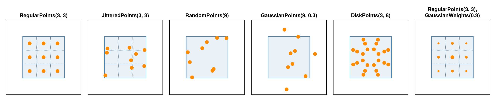
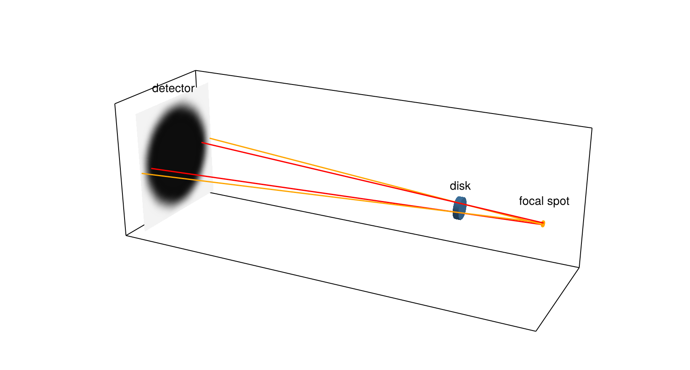
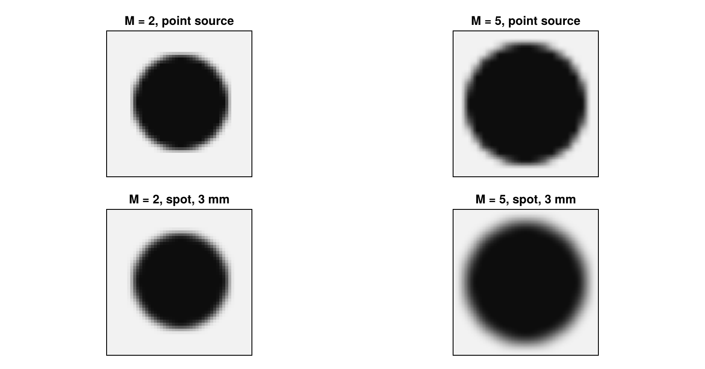
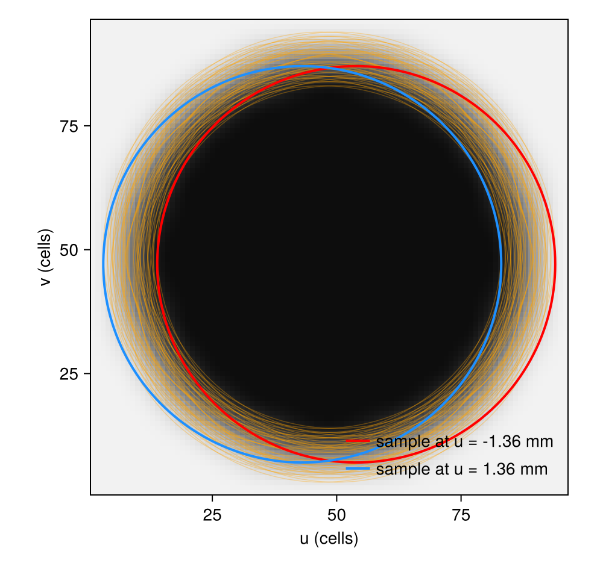
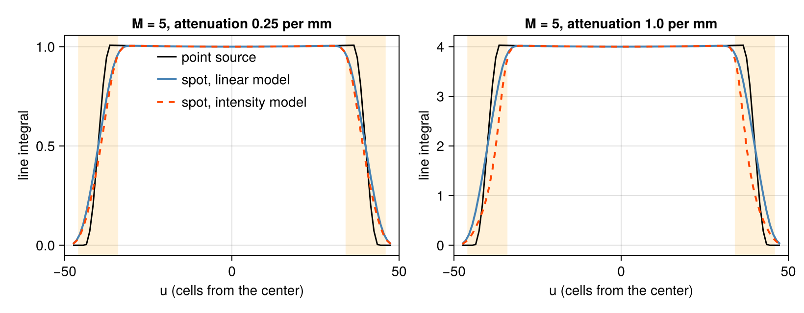

Sampling the Beam
A ray-driven projector traces one ray per data element, from a point source to the center of a detector cell. A real measurement averages over the area of the cell and over the focal spot, where the rays start. This page explains what sampled computes with samples of the detector cells (DetectorSampling) and of the focal spot (FocalSpot), the model that averages intensities (IntensityModel), how the samples are placed and weighted, how they are executed, and where random positions come from. Use Several Rays per Cell and Model the Focal Spot show how to use them.
using CTOperators, CairoMakieWhat is computed
A ray-driven projector such as Siddon's Method or Joseph's Method treats a detector cell as a point: one ray from the source to the center of the cell. When the cells are large compared to the voxels, the back projection of such rays has gaps (Miao 2013, p. 29). A real cell integrates over its area. sampled(op; detector=DetectorSampling(points; weights)) replaces the one ray by K rays per cell, ending at the offsets given by points, and averages their line integrals with the ray weights $w_{ik}$ given by weights:
\[y_i = \sum_{k=1}^K \frac{w_{ik}}{\sum_l w_{il}} \int_{\text{ray } (i, k)} x\]
The back projection is the exact adjoint: every ray adds its share $w_{ik} / \sum_l w_{il}$ of $y_i$. Miao (2013) calls the integral over the area of a ray path the "area integral" model; the rays of a cell sample such an integral.
A FocalSpot adds samples at the start of the rays: the rays of a view start at the points of the spot, with weights normalized over the spot. With both, the rays of a data element run from every source sample to every detector sample, with the products of the weights.
Averaging intensities
The weights above average line integrals $p_k$, which keeps the operator linear. A detector measures intensities, $\exp(-p_k)$, and averages those. IntensityModel computes, with the same normalized weights,
\[p_i = -\log \sum_k w_{ik} \exp(-p_{ik}).\]
De Man et al. (1999) model the finite focal spot and detector cells this way in a simulator: they sample both finely and take the logarithm of the summed photon flux, "the correct simulation procedure"; the mean of the line integrals over the same samples removes the exponential edge-gradient effect (EEGE), which they identify as an important cause of metal streak artifacts.
By Jensen's inequality $p_i$ is never larger than the mean $\sum_k w_{ik} p_{ik}$ ; for small differences between the $p_{ik}$ the gap is half their weighted variance. The two differ where the rays of one data element see different line integrals, at edges. For a cell whose rays see $0$ and $P$ in equal parts, computed from the two formulas and rounded; the relative difference is (mean − intensity model) / mean:
| P | mean | intensity model | relative difference |
|---|---|---|---|
| 0.1 | 0.0500 | 0.0488 | 2.5 % |
| 1 | 0.500 | 0.380 | 24 % |
| 4 | 2.00 | 0.675 | 66 % |
The model is nonlinear. Its derivative (CTOperators.jacobian) is a weighted sum of the projectors of the samples, $J = \sum_k \mathrm{diag}(\pi_k) A_k$, with weights $\pi_{ik} = w_{ik} \exp(-p_{ik}) / \sum_l w_{il} \exp(-p_{il})$ per data element; at $x = 0$ it is the linear model.
Positions on the detector
Positions are counted in cells: cell (iu, iv) has its center at (iu, iv) and its edges at half-integers. Every detector geometry knows the ray that ends at any position (CTOperators.cell_ray): on a flat detector a point on the plane, on an arc detector a point on the cylinder around the source at the angle that belongs to the position, on a parallel-beam detector a line through that point. So the rays of a cell sample its actual shape, also on curved detectors.
The point strategies give the offsets of the rays from the cell center, where ±1/2 are the cell edges; some go beyond them. The weighting strategies give a ray weight for every offset. In the figure the blue square is one cell, the dotted lines its subcells, and the orange points the rays, with the marker area relative to the largest ray weight in the panel:

- Regular points sit at the centers of
su × svsubcells: the midpoint rule for the integral over the cell, a sum at equal distances. - Jittered points move each regular point to a random position within its subcell ("jittered sampling", Cook 1986, also called stratified sampling). They keep the even spread, and neighboring cells do not share the same pattern.
- Random points are spread anywhere in the cell, so their mean differs from the average over the cell by a random amount. Use Several Rays per Cell shows an example with 4 rays per cell.
- Gaussian points are normally distributed around the cell center, and all rays count equally: the distribution of the positions is the weighting. Points may land outside the cell, which models blur across neighboring cells.
- Disk points (
DiskPoints) lie on rings of equal area inside the disk of radius 1/2, the same in every cell: a circular focal spot, or an elliptical one when its two sizes differ. - Given points (
Points) are the same in every cell and may lie outside it. - Gaussian weights describe a similar response with fixed positions: the points stay where they are, and the rays near the edges count less.
For images one voxel thick in z (2D images, or 3D images with nz = 1) the projectors keep all rays in the image plane: RegularPoints and JitteredPoints with several subcells along v, and DiskPoints, are rejected, and the other strategies get offsets along v of 0. Joseph's method interpolates along z between voxel centers, so a ray away from the plane through the voxel centers is weighted down, and a tilted ray may leave the image.
The focal spot
A FocalSpot(fu, fv; points, weights) is a flat patch of size fu × fv through the source, with the same point and weighting strategies as the cells (offsets in units of the spot size). For a flat detector the patch is parallel to the detector, fu along its rows; for a detector on an arc it is perpendicular to the central ray. In images one voxel thick in z the spot is sampled along u only, with the same rules as the cells above.
With the spot parallel to a flat detector, the rays from all its points through a point p meet the detector at the same magnification M (the distance from the spot plane to the detector over that to p). A source sample at offset δ moves the image of p by -(M - 1) δ: the shadow of the spot is the spot scaled by M - 1, and it depends on where p lies. For an object, the edge of its shadow spreads over a band of width f (M - 1) on the detector, with f the size of the spot: the penumbra. Tilley et al. (2016) call this the depth-dependent blur of the source: modeled ideally by integrating the transmission over a fine sampling of rays across the spot, which they describe as expensive, and approximated in their work by one convolution in the plane of the object. sampled does the sampling.
The figures below are computed with the package: a disk of radius 8 mm and thickness 4 mm that faces the source, with attenuation μ per mm, in a volume of 48³ voxels of 1 mm (each voxel holds the fraction of it inside the disk); one view of a flat detector of 96 × 96 cells of 1 mm, 300 mm from the source; Joseph's method. Every line through the disk along the beam has the same length, so its projection has a sharp edge. The source is 150 mm or 60 mm from the disk, which is magnified by M = 2 or M = 5. The spot is a disk of 3 mm (DiskPoints(4, 12), 48 samples). Three projections of each scan: the point source (op), the spot with the mean of the line integrals (sampled(op; source=spot), the linear model), and the spot with the intensity model (IntensityModel(op; source=spot)).
volume = ImageGeom(; dims=(48, 48, 48), deltas=(1.0, 1.0, 1.0));
# the disk: radius 8 in x and z, thickness 4 along y (the beam); voxels hold their fraction inside
function disk(mu; n=4)
x = zeros(Float32, 48, 48, 48)
subs = ((1:n) .- (n + 1) / 2) ./ n
for k in 1:48, j in 1:48, i in 1:48
c = (i - 24.5, j - 24.5, k - 24.5)
inside = count(hypot(c[1] + a, c[3] + b) <= 8 && abs(c[2] + d) <= 2 for a in subs, d in subs, b in subs)
x[i, j, k] = mu * inside / n^3
end
x
end
spot = FocalSpot(3.0; points=DiskPoints(4, 12))
scan(dso) = circular_cone_beam(; angles=[0.0], dso, dsd=300, nu=96, nv=96, du=1.0)
function projections(dso, mu)
op = JosephProjector(volume, scan(dso))
x = disk(mu)
(point=(op * x)[:, :, 1], linear=(sampled(op; source=spot) * x)[:, :, 1],
intensity=IntensityModel(op; source=spot)(x)[:, :, 1])
end
scans = Dict((dso, mu) => projections(dso, mu) for dso in (150, 60), mu in (0.25, 1.0));The scan with M = 5: the spot (its samples in orange) on the right, the disk, and the detector showing the projection with the spot (the linear model, μ = 0.25; dark for large line integrals). The lines run in the plane of the orbit from the edges of the spot past the rim of the disk: the red ones end at the edge of the full shadow, the orange ones at the outer edge of the penumbra.

The detector images, cut to the shadow, for both magnifications (μ = 0.25, the same gray scale):

With the point source the edge of the shadow spreads over a few cells, from the voxels of 1 mm, magnified. The spot adds a band of f (M - 1) = 3 cells for M = 2, where the two images hardly differ, and of 12 cells for M = 5, where the edge with the spot is visibly wider.
Where the band comes from: every source sample casts its own shadow of the disk, sharp and of radius 8 M cells, shifted by -(M - 1) δ. On the detector image with the spot for M = 5, the outlines of the 48 shadows (thin) and of two samples from opposite edges of the spot (colored): the full shadow is where all shadows overlap, the penumbra where only some of them lie.

Profiles through the center of the detector for M = 5, at μ = 0.25 and μ = 1, where the line integral through the disk is 1 and 4, with the band f (M - 1) around the edge of the point-source shadow shaded:

In the band the profiles with the spot fall off over its whole width, that of the point source over a few cells. At μ = 0.25 (a line integral of 1 through the disk) the intensity model lies slightly below the linear one in the band; at μ = 1 (a line integral of 4) clearly below: there some rays of a cell pass through the disk and others miss it, as in the table above.
A detector on an arc is a cylinder about the source. Moving the source of the geometry would move the detector with it, so a source sample is added only to the start of the rays: a CTOperators.Shifted geometry, whose detector stays where it is. For a flat detector the shifted samples are plain ConeBeams, and the detector samples of a parallel beam plain ParallelBeams.
Fused and sequential
A projector samples in one of two ways:
- In its kernel ("fused"): Siddon's and Joseph's methods sample the detector cells in their kernels. Each thread handles one data element and traces its
Krays; the operator is a projector on a geometry with several rays per cell. - One projector per sample ("sequential"): every other combination, and the focal spot for all projectors.
sampledbuilds a projector on a shifted geometry for each sample and sums them with their weights per view in aSampleSum. It costsKprojections and holds one data and one image buffer. Shifting a geometry moves all its cells alike, so sequential detector sampling needs points that are the same in every cell (CTOperators.varies_per_cell); jittered and random points need a projector that samples in its kernel.
The keyword execution chooses: :auto (in the kernel where the projector can, else one projector per sample), :fused or :sequential. What is possible at all is decided by dispatch on the projector, the geometry and the sampling (CTOperators.supports_sampling): a parallel beam has no source for a spot, a ray list no cells, and the distance-driven projector refuses detector sampling, since its footprint already covers the cell. Whether a kernel samples is CTOperators.fuses_sampling; a projector of another package declares it with one method (see Write a Sampling Strategy).
stacked keeps the projections of the samples side by side, a SampleStack with data K times the size; IntensityModel is built on it.
Random positions without a random number generator
The random positions must be the same in the forward and in the back projection, in every call and on every device: otherwise the back projection would not be the adjoint of the forward projection, and an iterative solver would see a different matrix in every iteration. A random number generator with state cannot give that in parallel kernels. Instead the positions are computed from the indices with a hash function, as GPU renderers do: pcg4d of Jarzynski and Olano (2020) maps four numbers, here the detector cell, the view, the number of the ray in the cell and the seed, to four numbers that look independent even for neighboring inputs; two of them give the offsets.
The view is numbered as in the full scan: subset of a sampled operator keeps these numbers, so the rays of a subset are those of the same views of the full operator, as ordered-subset methods require. A different seed gives a different, again fixed, set of positions: DetectorSampling(JitteredPoints(4, 1; seed=2)).
Implementation
- The number of rays per cell
Kis a type parameter of the point strategy. The loop over the rays of a cell has a length known to the compiler. WithK = 1the projector is as fast as on the plain geometry in our benchmark (128³ on a GPU, see below). - The kernels are those of the plain projectors: each thread handles one data element. For a cell with several rays it traces the
Krays one after the other and adds them up (forward), or first sums the ray weights and then lets every ray add its share (back). No memory per ray is needed. - The time is about
Ktimes that of one ray; jittered offsets and Gaussian ray weights added nothing measurable on a GPU (see the benchmarks). - The ray mask applies per data element (a masked element skips all its rays), the clipping to the bounding box of the image mask per ray.
sampled(subset(op, views); ...)numbers the views of the subset anew, so its random offsets differ from those of the same views ofsampled(op; ...): subset after sampling.- The voxel-driven projector samples a focal spot and the detector cells through one projector per sample; on an arc detector it finds where the ray from a shifted source through a voxel meets the cylinder by a quadratic equation.
- A geometry with several rays per cell has no single ray per data element. A projector that traces only one ray per cell fails with a
MethodErrorforraywhen applied, instead of silently ignoring the other rays.
References
- R. L. Cook, "Stochastic sampling in computer graphics", ACM Transactions on Graphics 5(1), 51–72, 1986.
- B. De Man, J. Nuyts, P. Dupont, G. Marchal, P. Suetens, "Metal streak artifacts in X-ray computed tomography: a simulation study", IEEE Transactions on Nuclear Science 46(3), 691–696, 1999.
- M. Jarzynski, M. Olano, "Hash functions for GPU rendering", Journal of Computer Graphics Techniques 9(3), 21–38, 2020.
- C. Miao, "Comparative studies of different system models for iterative CT image reconstruction", master's thesis, Wake Forest University, 2013.
- S. Tilley II, J. H. Siewerdsen, J. W. Stayman, "Model-based iterative reconstruction for flat-panel cone-beam CT with focal spot blur, detector blur, and correlated noise", Physics in Medicine and Biology 61(1), 296–319, 2016.
This page was generated using Literate.jl.